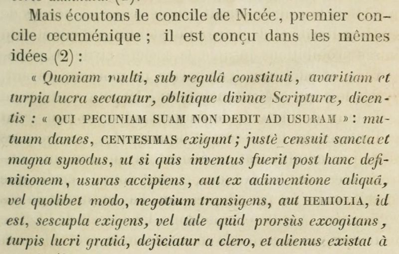
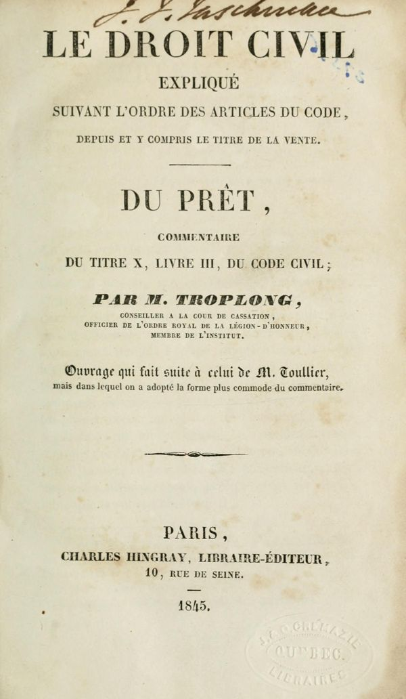
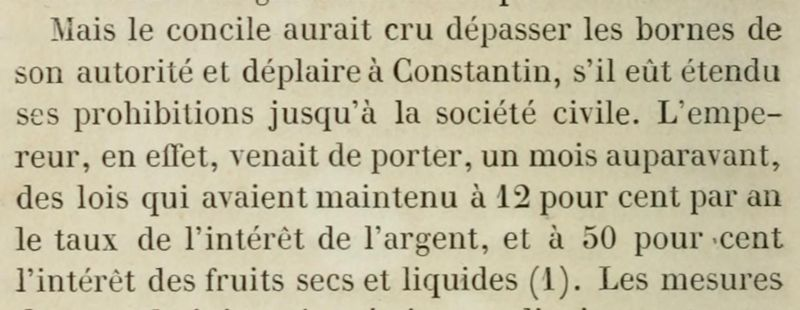
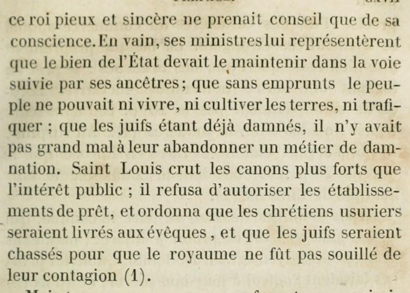
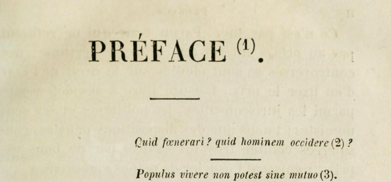

Nicaea, the clergy, and Constantine’s 12 per cent (pp. lxxix–lxxx)
French and Latin: preface, pp. lxxix–lxxx, scans n86–n87.


The oldest monuments of church legislation prove that the Church’s prohibitions of lending at interest extended to the clergy alone. …
But let us hear the Council of Nicaea, the first ecumenical council; it is framed in the same ideas:
“Since many enrolled under the rule pursue avarice and base gain and, forgetting the divine Scripture which says, ‘He that hath not given his money upon usury’, lend and exact the hundredth part [each month], the holy and great synod has justly decreed that if anyone is found, after this decision, taking usury, or conducting business by any device or in any manner, or demanding the hemiolia, that is, half as much again, or devising anything of the kind for the sake of base gain, he shall be cast out of the clergy and be a stranger to the rule.”
[p. lxxx] … But the council would have thought it was overstepping the bounds of its authority and displeasing Constantine had it extended its prohibitions to civil society. The emperor had in fact, a month before, issued laws which kept the rate of interest on money at 12 per cent a year, and at 50 per cent the interest on dry and liquid produce.
Original French
Les plus anciens monuments de la législation ecclésiastique prouvent que les défenses de l’Église à l’égard du prêt ne s’étendaient qu’aux seuls clercs. …
Mais écoutons le concile de Nicée, premier concile œcuménique; il est conçu dans les mêmes idées:
« Quoniam multi, sub regulâ constituti, avaritiam et turpia lucra sectantur, oblitique divinæ Scripturæ, dicentis: « Qui pecuniam suam non dedit ad usuram »: mutuum dantes, centesimas exigunt; justè censuit sancta et magna synodus, ut si quis inventus fuerit post hanc definitionem, usuras accipiens, aut ex adinventione aliquâ, vel quolibet modo, negotium transigens, aut hemiolia, id est, sescupla exigens, vel tale quid prorsùs excogitans, turpis lucri gratiâ, dejiciatur a clero, et alienus existat à regulâ. »
[p. lxxx] … Mais le concile aurait cru dépasser les bornes de son autorité et déplaire à Constantin, s’il eût étendu ses prohibitions jusqu’à la société civile. L’empereur, en effet, venait de porter, un mois auparavant, des lois qui avaient maintenu à 12 pour cent par an le taux de l’intérêt de l’argent, et à 50 pour cent l’intérêt des fruits secs et liquides.

Lecky’s note 26 follows Troplong closely: the law of 12 per cent “only a month before the Council of Nice”, the council’s wish “to avoid collision with the civil power”, and the canon itself, which Lecky quotes in exactly Troplong’s Latin, shortening it with “…” at the same point as the highlighted words above. Troplong says he preferred this Latin, by Saumaise (Salmasius), to Thomassin’s as “more exact” (canon 17; his note 2). Lecky’s closing remark, that “the Council of Eliberis … and the Third and Fourth Councils of Carthage expressly condemned usury in laymen”, answers an objection Troplong raises himself in his note 3: Elvira (dated there 305) forbade usury to laymen. On Carthage Troplong is more guarded than Lecky: the provincial councils, he says, pronounced no canonical penalties against laymen, “although some had hinted, during the fourth century, that usury by laymen is contrary to the word of God” (p. cvi, OCR only, citing Carthage, canon 13). Troplong’s authority for Constantine’s law is the Theodosian Code, “L. 1 C. Théod., De usuris”, with Godefroy’s commentary.
St Louis: “Let them give up usury, or leave my land” (p. cxvii)
French, with Latin from the life of St Louis in Duchesne’s collection: preface, p. cxvii, scan n124.

… this pious and sincere king took counsel only of his conscience. In vain his ministers represented to him that the good of the State required him to keep to the path his ancestors had followed; that without borrowing the people could neither live, nor till the land, nor trade; that since the Jews were already damned, there was no great harm in leaving them a trade of damnation. St Louis believed the canons stronger than the public interest; he refused to authorise lending establishments, and ordered that Christian usurers should be handed over to the bishops and that the Jews should be driven out, so that the kingdom should not be defiled by their contagion.
[note 1] “When several of his counsellors urged him to the contrary, asserting that the people could not live without loans, nor the land be tilled, nor crafts and trade be carried on, and saying it was better and more tolerable that the Jews, who are already damned, should practise this damnable office than certain Christians, who on this pretext oppressed the people with even higher usury …” This was St Louis’s answer: “Christian usurers and their usury seem to belong to the prelates of the Church.” And as to the Jews: “Let them give up usury, or leave my land, so that it be no longer defiled by their filth.” (Duchesne, vol. 5, p. 471, On the life and deeds of Louis IX.)
Original French
… ce roi pieux et sincère ne prenait conseil que de sa conscience. En vain, ses ministres lui représentèrent que le bien de l’État devait le maintenir dans la voie suivie par ses ancêtres; que sans emprunts le peuple ne pouvait ni vivre, ni cultiver les terres, ni trafiquer; que les juifs étant déjà damnés, il n’y avait pas grand mal à leur abandonner un métier de damnation. Saint Louis crut les canons plus forts que l’intérêt public; il refusa d’autoriser les établissements de prêt, et ordonna que les chrétiens usuriers seraient livrés aux évêques, et que les juifs seraient chassés pour que le royaume ne fût pas souillé de leur contagion.
[note 1] Cum autem in contrarium suaderent ei plures de consiliariis suis, asserentes quòd populus vivere non poterat sine mutuo, nec terra excoli, nec ministeria, nec mercimonia exerceri: et meliùs esse dicebant ac tolerabiliùs, quod judæi, qui jam damnati sunt, hujus damnationis exercerent officium, quam aliqui christiani, qui ex hâc occasione etiam majoribus usuris populum opprimebant… Voici la réponse de saint Louis: « De christianis fœneratoribus et eorum usuris ad prælatos Ecclesiæ pertinere videtur. » Et quant aux juifs: « Dimittant usuras, aut exeant de terrâ meâ, ne eorum sordibus ampliùs inquinetur » (Duchesne, t. 5, p. 471. De vitâ et actibus Ludovici noni).

Lecky’s note 70 (“St. Lewis refused to permit the Jews to exercise usury (Troplong)”) is a fair summary. Troplong uses the counsellors’ phrase Populus vivere non potest sine mutuo as the second motto of his preface (p. i), beneath Cato’s retort “Quid fœnerari? quid hominem occidere?” (“What of lending at interest?” “What of killing a man?”). The Latin is quoted here as Troplong prints it; his source, the life of Louis IX in André Duchesne’s Historiae Francorum scriptores, vol. V, has not been checked.
Further down the rabbit hole
Sources that Lecky cites in the notes next to the ones that cite this page.
- Lamet and Fromageau, Dictionnaire des cas de conscienceThe Sorbonne answers: three per cent is usury, and every actor is in mortal sin
- Concina, Adversus usuram and De spectaculisA Dominican against interest and against the stage: the pope’s own polemicist
- Paramo, De origine et progressu officii sanctae inquisitionisWhy the dead are tried for heresy
- Augustine, Enarratio in Psalmum XXXVI, sermo 3, § 6More than given, even in wheat or wine, is usury
- Turgot, Mémoire sur les prêts d’argentLecky’s Turgot quotation with two small differences
- Benedict XIV, Vix pervenitAny gain beyond the loan is unlawful usury


Backlinks
Every place in Rationalism in Europe that links to this page (generated automatically when the site is built).